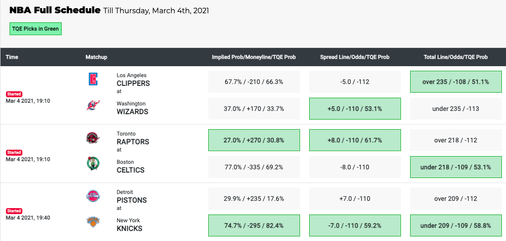
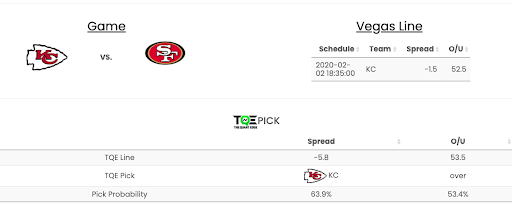
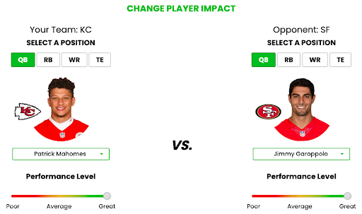
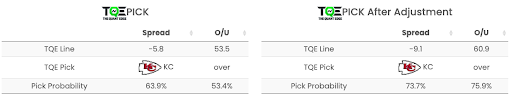
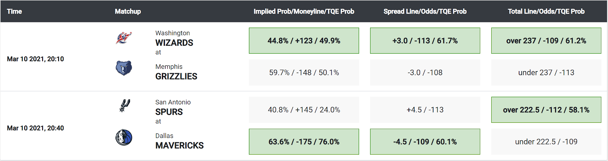

The Quant Edge
TQE makes it very easy for users to see our current picks and understand our suggestions and the probability we believe they have of being correct. Simply click on the 'Picks' tab on the homepage and choose the league you are betting on. For example, in the NBA section, TQE Picks for today will be highlighted in green and TQE High Confidence Picks will be highlighted in red. TQE offers picks in Moneyline, Spread line, and Total line, with our estimated probability of each suggested event happening also shown as a percentage.
Standard Picks/Bets:
Take a sample page from our website.
It is possible that TQE doesn't show favor to either side of a bet. This can happen when the probability calculated by TQE is less than the implied probability needed for the bet to generate positive revenue. Based on the odds, a single bet might not offer a positive payoff given the risk TQE calculates.
In several leagues like the NFL and NBA, the Spread lines for different games will vary, but the odds will generally just be the 'vig' or 'juice' that is generally set at -110. However, for the MLB and NHL, you have the option to bet the Moneyline or the standard Spread line at -1.5 or +1.5 between favorites and underdogs. The difference is instead expressed in their difference in odds. For example, the odds are +235 at -1.5 for the Rangers and -290 for the Panthers. The potential payout and risk associated with the game odds at -1.5/+1.5 vary to a much larger degree.

Player Impact Tools
One important innovation provided to TQE subscribers is the Player Impact Tools. TQE gives subscribers the opportunity to input their own opinion of players' performance into betting decisions. These patent-pending tools allow subscribers to adjust the TQE game predictions based on an estimated performance of multiple players for each game. Users can make their own predictions on the performances of individual players by the three categories of poor, average, and great. Then the TQE predicted result will change accordingly. Therefore, TQE Player Impact Tools can create up to 4.8 million scenarios for an NFL game (14 players in total from 2 teams by 3 performance categories: 314 =4.8 million) and 3.5 billion scenarios for an NBA game (20 players in total from 2 teams by 3 performance categories: 320 = 3.5 billion). Take Baltimore Ravens vs Kansas City Chiefs as an example. The users can easily change the performance level of players in different positions.
Suppose that you think Lamar Jackson and Patrick Mahomes will both perform above expectations. Then you can adjust their performance levels separately, as shown below. You can also change other players' performance levels according to your predictions. TQE will show different results based on your choices.
Pick results before and after the adjustment:
If you only do the above changes on Lamar Jackson and Patrick Mahomes, TQE predicts that Spread will change from -8.6 to -7.3. Pick Probability tells you how much chance you will beat the Vegas Line if you make this pick. For example, in this case, if Lamar Jackson and Patrick Mahomes are both performing well, and you pick Chiefs, there is a 58.6% chance that Chiefs will beat the Vegas Line. The same applies to the calculation of Over/Under.
Expected Return
Let's illustrate the concept of the expected return based on the vegas spread:
Take Houston Texans vs Indianapolis Colts as an example.
Pick results before the adjustment:

TQE predicts the Spread will be -7.6. TQE picks Houston Texans and the pick probability of beating the Spread at -1.5 will be 61.9%.
The formula to calculate expected return:
Expected Return = ( return of win x TQE win probability ) + ( return of loss x TQE loss probability ) betting principal
In this case, the pick probability of winning the Spread is 61.9% and the TQE loss probability is (1-61.9%) = 38.1%. TQE suggests picking Houston Texans.
Therefore, we can calculate the expected return of our pick of Spread. ER = (100 * 0.619 + (-110) * (0.381)) / (110) = 0.1817 (approx ~ 0.18)
0.18 means that over time for every bet you make with the 0.18 expected return you will make or average out $18 in profit for every $100 you bet.
Now we can use the Player Impact tools and change Anthony Rechardson(IND QB)'s and Jonathon Taylor(IND RB)'s performance level to 'Great' but keep others intact.

In this case, TQE expects that Indianapolis Colts will instead win by 2.5 points. If we pick Colts, TQE expects that there will be a 57.9% chance to beat the Vegas Line at 1.5. Similarly, we can calculate the expected return if we choose the Colts in this scenario.
TQE Historical Returns
Our high confidence bets (with greater than 60% confidence) have had an impressive 5-year track record of being over 56% accurate, with some years having a success rate of over 65% (2018-2019, 2020-2021).